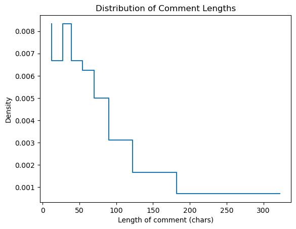
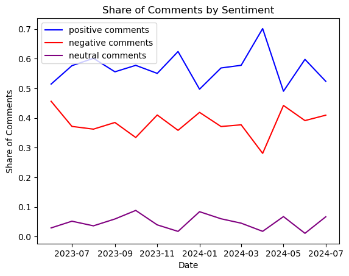

# Setup - Run only once per Kernel App%conda install https://anaconda.org/conda-forge/openjdk/11.0.1/download/linux-64/openjdk-11.0.1-hacce0ff_1021.tar.bz2# install PySpark%pip install pyspark==3.4.0# restart kernelfrom IPython.core.display import HTMLHTML("<script>Jupyter.notebook.kernel.restart()</script>")
Retrieving notices: ...working... done
Downloading and Extracting Packages:
## Package Plan ##
environment location: /opt/conda
added / updated specs:
- conda-forge/openjdk/11.0.1/download/linux-64::openjdk==11.0.1=hacce0ff_1021
The following NEW packages will be INSTALLED:
openjdk conda-forge/openjdk/11.0.1/download/linux-64::openjdk-11.0.1-hacce0ff_1021
Downloading and Extracting Packages:
Preparing transaction: done
Verifying transaction: done
Executing transaction: done
Note: you may need to restart the kernel to use updated packages.
Collecting pyspark==3.4.0
Using cached pyspark-3.4.0-py2.py3-none-any.whl
Requirement already satisfied: py4j==0.10.9.7 in /opt/conda/lib/python3.11/site-packages (from pyspark==3.4.0) (0.10.9.7)
Installing collected packages: pyspark
Successfully installed pyspark-3.4.0
Note: you may need to restart the kernel to use updated packages.
Ivy Default Cache set to: /home/sagemaker-user/.ivy2/cache
The jars for the packages stored in: /home/sagemaker-user/.ivy2/jars
com.johnsnowlabs.nlp#spark-nlp_2.12 added as a dependency
:: resolving dependencies :: org.apache.spark#spark-submit-parent-74b5a337-1aa9-4b49-ac16-fc97eb9c486a;1.0
confs: [default]
found com.johnsnowlabs.nlp#spark-nlp_2.12;5.5.1 in central
found com.typesafe#config;1.4.2 in central
found org.rocksdb#rocksdbjni;6.29.5 in central
found com.amazonaws#aws-java-sdk-s3;1.12.500 in central
found com.amazonaws#aws-java-sdk-kms;1.12.500 in central
found com.amazonaws#aws-java-sdk-core;1.12.500 in central
found commons-logging#commons-logging;1.1.3 in central
found commons-codec#commons-codec;1.15 in central
found org.apache.httpcomponents#httpclient;4.5.13 in central
found org.apache.httpcomponents#httpcore;4.4.13 in central
found software.amazon.ion#ion-java;1.0.2 in central
found joda-time#joda-time;2.8.1 in central
found com.amazonaws#jmespath-java;1.12.500 in central
found com.github.universal-automata#liblevenshtein;3.0.0 in central
found com.google.protobuf#protobuf-java-util;3.0.0-beta-3 in central
found com.google.protobuf#protobuf-java;3.0.0-beta-3 in central
found com.google.code.gson#gson;2.3 in central
found it.unimi.dsi#fastutil;7.0.12 in central
found org.projectlombok#lombok;1.16.8 in central
found com.google.cloud#google-cloud-storage;2.20.1 in central
found com.google.guava#guava;31.1-jre in central
found com.google.guava#failureaccess;1.0.1 in central
found com.google.guava#listenablefuture;9999.0-empty-to-avoid-conflict-with-guava in central
found com.google.errorprone#error_prone_annotations;2.18.0 in central
found com.google.j2objc#j2objc-annotations;1.3 in central
found com.google.http-client#google-http-client;1.43.0 in central
found io.opencensus#opencensus-contrib-http-util;0.31.1 in central
found com.google.http-client#google-http-client-jackson2;1.43.0 in central
found com.google.http-client#google-http-client-gson;1.43.0 in central
found com.google.api-client#google-api-client;2.2.0 in central
found com.google.oauth-client#google-oauth-client;1.34.1 in central
found com.google.http-client#google-http-client-apache-v2;1.43.0 in central
found com.google.apis#google-api-services-storage;v1-rev20220705-2.0.0 in central
found com.google.code.gson#gson;2.10.1 in central
found com.google.cloud#google-cloud-core;2.12.0 in central
found io.grpc#grpc-context;1.53.0 in central
found com.google.auto.value#auto-value-annotations;1.10.1 in central
found com.google.auto.value#auto-value;1.10.1 in central
found javax.annotation#javax.annotation-api;1.3.2 in central
found com.google.cloud#google-cloud-core-http;2.12.0 in central
found com.google.http-client#google-http-client-appengine;1.43.0 in central
found com.google.api#gax-httpjson;0.108.2 in central
found com.google.cloud#google-cloud-core-grpc;2.12.0 in central
found io.grpc#grpc-alts;1.53.0 in central
found io.grpc#grpc-grpclb;1.53.0 in central
found org.conscrypt#conscrypt-openjdk-uber;2.5.2 in central
found io.grpc#grpc-auth;1.53.0 in central
found io.grpc#grpc-protobuf;1.53.0 in central
found io.grpc#grpc-protobuf-lite;1.53.0 in central
found io.grpc#grpc-core;1.53.0 in central
found com.google.api#gax;2.23.2 in central
found com.google.api#gax-grpc;2.23.2 in central
found com.google.auth#google-auth-library-credentials;1.16.0 in central
found com.google.auth#google-auth-library-oauth2-http;1.16.0 in central
found com.google.api#api-common;2.6.2 in central
found io.opencensus#opencensus-api;0.31.1 in central
found com.google.api.grpc#proto-google-iam-v1;1.9.2 in central
found com.google.protobuf#protobuf-java;3.21.12 in central
found com.google.protobuf#protobuf-java-util;3.21.12 in central
found com.google.api.grpc#proto-google-common-protos;2.14.2 in central
found org.threeten#threetenbp;1.6.5 in central
found com.google.api.grpc#proto-google-cloud-storage-v2;2.20.1-alpha in central
found com.google.api.grpc#grpc-google-cloud-storage-v2;2.20.1-alpha in central
found com.google.api.grpc#gapic-google-cloud-storage-v2;2.20.1-alpha in central
found com.google.code.findbugs#jsr305;3.0.2 in central
found io.grpc#grpc-api;1.53.0 in central
found io.grpc#grpc-stub;1.53.0 in central
found org.checkerframework#checker-qual;3.31.0 in central
found io.perfmark#perfmark-api;0.26.0 in central
found com.google.android#annotations;4.1.1.4 in central
found org.codehaus.mojo#animal-sniffer-annotations;1.22 in central
found io.opencensus#opencensus-proto;0.2.0 in central
found io.grpc#grpc-services;1.53.0 in central
found com.google.re2j#re2j;1.6 in central
found io.grpc#grpc-netty-shaded;1.53.0 in central
found io.grpc#grpc-googleapis;1.53.0 in central
found io.grpc#grpc-xds;1.53.0 in central
found com.navigamez#greex;1.0 in central
found dk.brics.automaton#automaton;1.11-8 in central
found com.johnsnowlabs.nlp#tensorflow-cpu_2.12;0.4.4 in central
found com.microsoft.onnxruntime#onnxruntime;1.19.2 in central
found com.johnsnowlabs.nlp#jsl-llamacpp-cpu_2.12;0.1.4 in central
found org.jetbrains#annotations;24.1.0 in central
found com.johnsnowlabs.nlp#jsl-openvino-cpu_2.12;0.1.0 in central
:: resolution report :: resolve 1876ms :: artifacts dl 61ms
:: modules in use:
com.amazonaws#aws-java-sdk-core;1.12.500 from central in [default]
com.amazonaws#aws-java-sdk-kms;1.12.500 from central in [default]
com.amazonaws#aws-java-sdk-s3;1.12.500 from central in [default]
com.amazonaws#jmespath-java;1.12.500 from central in [default]
com.github.universal-automata#liblevenshtein;3.0.0 from central in [default]
com.google.android#annotations;4.1.1.4 from central in [default]
com.google.api#api-common;2.6.2 from central in [default]
com.google.api#gax;2.23.2 from central in [default]
com.google.api#gax-grpc;2.23.2 from central in [default]
com.google.api#gax-httpjson;0.108.2 from central in [default]
com.google.api-client#google-api-client;2.2.0 from central in [default]
com.google.api.grpc#gapic-google-cloud-storage-v2;2.20.1-alpha from central in [default]
com.google.api.grpc#grpc-google-cloud-storage-v2;2.20.1-alpha from central in [default]
com.google.api.grpc#proto-google-cloud-storage-v2;2.20.1-alpha from central in [default]
com.google.api.grpc#proto-google-common-protos;2.14.2 from central in [default]
com.google.api.grpc#proto-google-iam-v1;1.9.2 from central in [default]
com.google.apis#google-api-services-storage;v1-rev20220705-2.0.0 from central in [default]
com.google.auth#google-auth-library-credentials;1.16.0 from central in [default]
com.google.auth#google-auth-library-oauth2-http;1.16.0 from central in [default]
com.google.auto.value#auto-value;1.10.1 from central in [default]
com.google.auto.value#auto-value-annotations;1.10.1 from central in [default]
com.google.cloud#google-cloud-core;2.12.0 from central in [default]
com.google.cloud#google-cloud-core-grpc;2.12.0 from central in [default]
com.google.cloud#google-cloud-core-http;2.12.0 from central in [default]
com.google.cloud#google-cloud-storage;2.20.1 from central in [default]
com.google.code.findbugs#jsr305;3.0.2 from central in [default]
com.google.code.gson#gson;2.10.1 from central in [default]
com.google.errorprone#error_prone_annotations;2.18.0 from central in [default]
com.google.guava#failureaccess;1.0.1 from central in [default]
com.google.guava#guava;31.1-jre from central in [default]
com.google.guava#listenablefuture;9999.0-empty-to-avoid-conflict-with-guava from central in [default]
com.google.http-client#google-http-client;1.43.0 from central in [default]
com.google.http-client#google-http-client-apache-v2;1.43.0 from central in [default]
com.google.http-client#google-http-client-appengine;1.43.0 from central in [default]
com.google.http-client#google-http-client-gson;1.43.0 from central in [default]
com.google.http-client#google-http-client-jackson2;1.43.0 from central in [default]
com.google.j2objc#j2objc-annotations;1.3 from central in [default]
com.google.oauth-client#google-oauth-client;1.34.1 from central in [default]
com.google.protobuf#protobuf-java;3.21.12 from central in [default]
com.google.protobuf#protobuf-java-util;3.21.12 from central in [default]
com.google.re2j#re2j;1.6 from central in [default]
com.johnsnowlabs.nlp#jsl-llamacpp-cpu_2.12;0.1.4 from central in [default]
com.johnsnowlabs.nlp#jsl-openvino-cpu_2.12;0.1.0 from central in [default]
com.johnsnowlabs.nlp#spark-nlp_2.12;5.5.1 from central in [default]
com.johnsnowlabs.nlp#tensorflow-cpu_2.12;0.4.4 from central in [default]
com.microsoft.onnxruntime#onnxruntime;1.19.2 from central in [default]
com.navigamez#greex;1.0 from central in [default]
com.typesafe#config;1.4.2 from central in [default]
commons-codec#commons-codec;1.15 from central in [default]
commons-logging#commons-logging;1.1.3 from central in [default]
dk.brics.automaton#automaton;1.11-8 from central in [default]
io.grpc#grpc-alts;1.53.0 from central in [default]
io.grpc#grpc-api;1.53.0 from central in [default]
io.grpc#grpc-auth;1.53.0 from central in [default]
io.grpc#grpc-context;1.53.0 from central in [default]
io.grpc#grpc-core;1.53.0 from central in [default]
io.grpc#grpc-googleapis;1.53.0 from central in [default]
io.grpc#grpc-grpclb;1.53.0 from central in [default]
io.grpc#grpc-netty-shaded;1.53.0 from central in [default]
io.grpc#grpc-protobuf;1.53.0 from central in [default]
io.grpc#grpc-protobuf-lite;1.53.0 from central in [default]
io.grpc#grpc-services;1.53.0 from central in [default]
io.grpc#grpc-stub;1.53.0 from central in [default]
io.grpc#grpc-xds;1.53.0 from central in [default]
io.opencensus#opencensus-api;0.31.1 from central in [default]
io.opencensus#opencensus-contrib-http-util;0.31.1 from central in [default]
io.opencensus#opencensus-proto;0.2.0 from central in [default]
io.perfmark#perfmark-api;0.26.0 from central in [default]
it.unimi.dsi#fastutil;7.0.12 from central in [default]
javax.annotation#javax.annotation-api;1.3.2 from central in [default]
joda-time#joda-time;2.8.1 from central in [default]
org.apache.httpcomponents#httpclient;4.5.13 from central in [default]
org.apache.httpcomponents#httpcore;4.4.13 from central in [default]
org.checkerframework#checker-qual;3.31.0 from central in [default]
org.codehaus.mojo#animal-sniffer-annotations;1.22 from central in [default]
org.conscrypt#conscrypt-openjdk-uber;2.5.2 from central in [default]
org.jetbrains#annotations;24.1.0 from central in [default]
org.projectlombok#lombok;1.16.8 from central in [default]
org.rocksdb#rocksdbjni;6.29.5 from central in [default]
org.threeten#threetenbp;1.6.5 from central in [default]
software.amazon.ion#ion-java;1.0.2 from central in [default]
:: evicted modules:
commons-logging#commons-logging;1.2 by [commons-logging#commons-logging;1.1.3] in [default]
commons-codec#commons-codec;1.11 by [commons-codec#commons-codec;1.15] in [default]
com.google.protobuf#protobuf-java-util;3.0.0-beta-3 by [com.google.protobuf#protobuf-java-util;3.21.12] in [default]
com.google.protobuf#protobuf-java;3.0.0-beta-3 by [com.google.protobuf#protobuf-java;3.21.12] in [default]
com.google.code.gson#gson;2.3 by [com.google.code.gson#gson;2.10.1] in [default]
---------------------------------------------------------------------
| | modules || artifacts |
| conf | number| search|dwnlded|evicted|| number|dwnlded|
---------------------------------------------------------------------
| default | 86 | 0 | 0 | 5 || 81 | 0 |
---------------------------------------------------------------------
:: retrieving :: org.apache.spark#spark-submit-parent-74b5a337-1aa9-4b49-ac16-fc97eb9c486a
confs: [default]
0 artifacts copied, 81 already retrieved (0kB/29ms)
24/11/15 00:51:20 WARN NativeCodeLoader: Unable to load native-hadoop library for your platform... using builtin-java classes where applicable
Setting default log level to "WARN".
To adjust logging level use sc.setLogLevel(newLevel). For SparkR, use setLogLevel(newLevel).
24/11/14 21:32:56 WARN SparkSession: Using an existing Spark session; only runtime SQL configurations will take effect.
tokenizer = Tokenizer(inputCol="text", outputCol="words")# Vectorize the words using CountVectorizer (instead of HashingTF)countVectorizer = CountVectorizer(inputCol="words", outputCol="raw_features", vocabSize=1000, minDF=1)# Compute the IDF (Inverse Document Frequency)idf = IDF(inputCol="raw_features", outputCol="tfidf_features")# Build the pipelinepipeline = Pipeline(stages=[tokenizer, countVectorizer, idf])# Fit and transform the datamodel = pipeline.fit(df)result = model.transform(df)
openjdk version "11.0.1-internal" 2018-10-16
OpenJDK Runtime Environment (build 11.0.1-internal+0-adhoc..src)
OpenJDK 64-Bit Server VM (build 11.0.1-internal+0-adhoc..src, mixed mode)
+--------------------+
| body|
+--------------------+
|We’ll all be rich...|
|It’s probably jus...|
|It's going to be ...|
|I will be laughin...|
| [removed]|
|Always the countr...|
|I am excited to s...|
| Over 9000|
| That's incredible!|
|These are the Bit...|
|The real whale, r...|
| VTI|
|I mean that's one...|
|I love your enthu...|
|What a sack of sh...|
|Stablecoins aren'...|
|Sold 24% of my st...|
|Receiving them co...|
|Imagine u get pai...|
|What do we use mo...|
+--------------------+
only showing top 20 rows
%pip install sparknlp
Collecting sparknlp
Downloading sparknlp-1.0.0-py3-none-any.whl.metadata (1.2 kB)
Collecting spark-nlp (from sparknlp)
Downloading spark_nlp-5.5.1-py2.py3-none-any.whl.metadata (19 kB)
Requirement already satisfied: numpy in /opt/conda/lib/python3.11/site-packages (from sparknlp) (1.26.4)
Downloading sparknlp-1.0.0-py3-none-any.whl (1.4 kB)
Downloading spark_nlp-5.5.1-py2.py3-none-any.whl (626 kB)
━━━━━━━━━━━━━━━━━━━━━━━━━━━━━━━━━━━━━━━━ 626.6/626.6 kB 39.7 MB/s eta 0:00:00
Installing collected packages: spark-nlp, sparknlp
Successfully installed spark-nlp-5.5.1 sparknlp-1.0.0
Note: you may need to restart the kernel to use updated packages.
# this sell is for non sparknlp EDAworking_comments2 = working_comments2.withColumn('bodylen', f.length(f.col('body')))working_comments2.show()
# get a plot of the percentiles of the datafrom pyspark.sql import Windowbodylens = working_comments2.select(f.col('bodylen'))pct_list = [0.1,0.2,0.3,0.4,0.5,0.6,0.7,0.8,0.9]percentiles = bodylens.select( f.percentile_approx(f.col('bodylen'), percentage = pct_list).alias('percent')).toPandas()print(percentiles)#bodylens.withColumn("cd", f.cume_dist().over(w)).show()
import matplotlib.pyplot as pltpercentile_list = percentiles.loc[0,].item()density_list = []for index, item inenumerate(percentile_list): lastval =0if index >0: lastval = percentile_list[index-1] density =0.1/ (item-lastval) density_list.append(density)plt.figure()plt.step(percentile_list, density_list)plt.xlabel("Length of comment (chars)")plt.ylabel("Density")plt.title("Distribution of Comment Lengths")plt.savefig('allcoment_length_density.png')

working_comments2.count()
3881
# dummy variables for regex matches in the commentssnp ="(?i)s and p|(?i)s&p|(?i)s&p 500|(?i)s&p500|(?i)s and p 500|(?i)spy|(?i)congress"crypto ="(?i)bitcoin|(?i)btc|(?i)eth|(?i)ether|(?i)crypto|(?i)etherium|(?i)alts|(?i)altcoin|(?i)shitcoin"fed ="(?i)jp|(?i)powell|(?i)fed|(?i)federal reserve|(?i)jerome|(?i)jpow|(?i)printer"working_comments2 = working_comments2.withColumn("snp", f.when(f.col("body").rlike(snp), 'true').otherwise('false')) \ .withColumn("crypto", f.when(f.col("body").rlike(crypto), 'true').otherwise('false')) \ .withColumn("fed", f.when(f.col("body").rlike(fed), 'true').otherwise('false'))
working_comments2.groupBy('snp').count().show()working_comments2.groupBy('crypto').count().show()working_comments2.groupBy('fed').count().show()# in 4k comments, 32 mention fed, 762 mention crypto, 31 mention the snp
from pyspark.sql import SparkSessionfrom pyspark.ml.feature import Tokenizer, CountVectorizer, IDF, StopWordsRemover, HashingTFfrom pyspark.ml import Pipelinefrom pyspark.sql.functions import colimport numpy as nptokenizer = Tokenizer(inputCol="body", outputCol="words")# Vectorize the words using CountVectorizer (instead of HashingTF)stopwords_remover = StopWordsRemover(inputCol="words", outputCol="filtered_words")#hashingTF = HashingTF(inputCol="filtered_words", outputCol="raw_features", numFeatures=20)#countVectorizer = CountVectorizer(inputCol="filtered_words", outputCol="raw_features", vocabSize=1000, minDF=1)# Compute the IDF (Inverse Document Frequency)#idf = IDF(inputCol="raw_features", outputCol="tfidf_features")# Build the pipelinepipeline = Pipeline(stages=[tokenizer, stopwords_remover])
# Fit and transform the datamodel = pipeline.fit(working_comments2)result = model.transform(working_comments2)
documentAssembler = DocumentAssembler()\ .setInputCol("body")\ .setOutputCol("document")MODEL_NAME='sentimentdl_use_twitter'use = UniversalSentenceEncoder.pretrained(name="tfhub_use", lang="en")\ .setInputCols(["document"])\ .setOutputCol("sentence_embeddings")# convert text to lowercase, remove special characters, punctuation, and transform words based on a provided dictionary.sentimentdl = SentimentDLModel.pretrained(name=MODEL_NAME, lang="en")\ .setInputCols(["sentence_embeddings"])\ .setOutputCol("sentiments")finisher= ( Finisher() .setInputCols(["sentiments"]).setOutputCols("sentiment"))nlpPipeline = Pipeline( stages = [ documentAssembler, use, sentimentdl, finisher ])
tfhub_use download started this may take some time.
Approximate size to download 923.7 MB
[ | ][OK!]
sentimentdl_use_twitter download started this may take some time.
Approximate size to download 11.4 MB
[ | ][OK!]
24/11/15 01:36:52 WARN S3AbortableInputStream: Not all bytes were read from the S3ObjectInputStream, aborting HTTP connection. This is likely an error and may result in sub-optimal behavior. Request only the bytes you need via a ranged GET or drain the input stream after use.
24/11/15 01:36:54 WARN S3AbortableInputStream: Not all bytes were read from the S3ObjectInputStream, aborting HTTP connection. This is likely an error and may result in sub-optimal behavior. Request only the bytes you need via a ranged GET or drain the input stream after use.
24/11/14 20:50:55 WARN package: Truncated the string representation of a plan since it was too large. This behavior can be adjusted by setting 'spark.sql.debug.maxToStringFields'.
from pyspark import SparkContextsc = SparkContext("local", "Simple App")print(sc)
ValueError: Cannot run multiple SparkContexts at once; existing SparkContext(app=Spark NLP, master=local[*]) created by getOrCreate at /opt/conda/lib/python3.11/site-packages/sparknlp/__init__.py:199
sentimentdl_use_twitter download started this may take some time.
Approximate size to download 11.4 MB
[ | ]sentimentdl_use_twitter download started this may take some time.
Approximate size to download 11.4 MB
Download done! Loading the resource.
[ / ][OK!]
24/11/15 01:34:17 WARN S3AbortableInputStream: Not all bytes were read from the S3ObjectInputStream, aborting HTTP connection. This is likely an error and may result in sub-optimal behavior. Request only the bytes you need via a ranged GET or drain the input stream after use.
24/11/15 01:34:17 WARN S3AbortableInputStream: Not all bytes were read from the S3ObjectInputStream, aborting HTTP connection. This is likely an error and may result in sub-optimal behavior. Request only the bytes you need via a ranged GET or drain the input stream after use.
2024-11-15 01:34:20.792926: I external/org_tensorflow/tensorflow/core/platform/cpu_feature_guard.cc:151] This TensorFlow binary is optimized with oneAPI Deep Neural Network Library (oneDNN) to use the following CPU instructions in performance-critical operations: AVX2 AVX512F FMA
To enable them in other operations, rebuild TensorFlow with the appropriate compiler flags.
TypeError: setInputCols in SentimentDLModel_eca587b575f7 expecting 1 columns. Provided column amount: 2. Which should be columns from the following annotators: ['sentence_embeddings']
WARNING: An illegal reflective access operation has occurred
WARNING: Illegal reflective access by org.apache.spark.util.SizeEstimator$ (file:/opt/conda/lib/python3.11/site-packages/pyspark/jars/spark-core_2.12-3.4.0.jar) to field java.util.regex.Pattern.pattern
WARNING: Please consider reporting this to the maintainers of org.apache.spark.util.SizeEstimator$
WARNING: Use --illegal-access=warn to enable warnings of further illegal reflective access operations
WARNING: All illegal access operations will be denied in a future release
import matplotlib.pyplot as pltimport datetimesentiment_over_time['DATE'] = pd.to_datetime(sentiment_over_time[['year', 'month']].assign(DAY=1))for row inrange(0,sentiment_over_time.shape[0]): total = sentiment_over_time.loc[row,'total'] sentiment_over_time.loc[row,'posshare'] = sentiment_over_time.loc[row,'postotal'] / total sentiment_over_time.loc[row,'negshare'] = sentiment_over_time.loc[row,'negtotal'] / total sentiment_over_time.loc[row,'neushare'] = sentiment_over_time.loc[row,'neutotal'] / totalsentiment_over_time.sort_values('DATE', inplace =True)plt.figure()#plt.plot(sentiment_over_time['DATE'], sentiment_over_time['total'], color = 'gray', label = 'all comments')plt.plot(sentiment_over_time['DATE'], sentiment_over_time['posshare'], color ='b', label ='positive comments')plt.plot(sentiment_over_time['DATE'], sentiment_over_time['negshare'], color ='r', label ='negative comments')plt.plot(sentiment_over_time['DATE'], sentiment_over_time['neushare'], color ='purple', label ='neutral comments')plt.title('Share of Comments by Sentiment')plt.xlabel('Date')plt.ylabel('Share of Comments')plt.legend()plt.show()plt.savefig('sentiment_share_of_comments.png')

<Figure size 640x480 with 0 Axes>
# group by number of comments with each sentiment for each mentionsentiment_mentions = clean_results.groupBy('snp','crypto','fed').agg(f.count('*').alias('total'), f.sum('pos').alias('postotal'), f.sum('neg').alias('negtotal'), f.sum('neu').alias('neutotal')).toPandas()
# create a table import dataframe_image as dfi# adjust numbers to be percent of totalfor row inrange(0,sentiment_mentions.shape[0]): total = sentiment_mentions.loc[row,'total'] sentiment_mentions.loc[row,'postotal'] = sentiment_mentions.loc[row,'postotal'] / total sentiment_mentions.loc[row,'negtotal'] = sentiment_mentions.loc[row,'negtotal'] / total sentiment_mentions.loc[row,'neutotal'] = sentiment_mentions.loc[row,'neutotal'] / totalsentiment_mentions['total'] = sentiment_mentions['total'] /sum(sentiment_mentions['total'])#sentiment_mentions = sentiment_mentions.round(2)#pd.options.display.float_format = "{:,.2f}".formatsentiment_mentions.columns = ['S&P Mentioned', 'Crypto Mentioned', 'Fed Mentioned', 'Share of All Comments', '% Positive', '% Negative', '% Neutral']df_styled = sentiment_mentions.style.background_gradient()
/tmp/ipykernel_135/3390288318.py:7: FutureWarning: Setting an item of incompatible dtype is deprecated and will raise an error in a future version of pandas. Value '0.6917900403768507' has dtype incompatible with int64, please explicitly cast to a compatible dtype first.
sentiment_mentions.loc[row,'postotal'] = sentiment_mentions.loc[row,'postotal'] / total
/tmp/ipykernel_135/3390288318.py:8: FutureWarning: Setting an item of incompatible dtype is deprecated and will raise an error in a future version of pandas. Value '0.27456258411843876' has dtype incompatible with int64, please explicitly cast to a compatible dtype first.
sentiment_mentions.loc[row,'negtotal'] = sentiment_mentions.loc[row,'negtotal'] / total
/tmp/ipykernel_135/3390288318.py:9: FutureWarning: Setting an item of incompatible dtype is deprecated and will raise an error in a future version of pandas. Value '0.033647375504710635' has dtype incompatible with int64, please explicitly cast to a compatible dtype first.
sentiment_mentions.loc[row,'neutotal'] = sentiment_mentions.loc[row,'neutotal'] / total
df_styled
S&P Mentioned
Crypto Mentioned
Fed Mentioned
Share of All Comments
% Positive
% Negative
% Neutral
0
true
true
true
0.000258
1.000000
0.000000
0.000000
1
false
true
false
0.191446
0.691790
0.274563
0.033647
2
false
false
false
0.792837
0.538837
0.407215
0.053949
3
true
true
false
0.001804
0.714286
0.285714
0.000000
4
true
false
false
0.005669
0.818182
0.181818
0.000000
5
true
false
true
0.000258
1.000000
0.000000
0.000000
6
false
true
true
0.002834
0.545455
0.454545
0.000000
7
false
false
true
0.004896
0.421053
0.421053
0.157895
# plots# plot 1: average sentiment across all comments over time(lines)# plot 2: share of pos/neg/neurtral sentiment (stacked bars)# plot 3: daily mentions of fed vs. daily sentiment? (scatter)